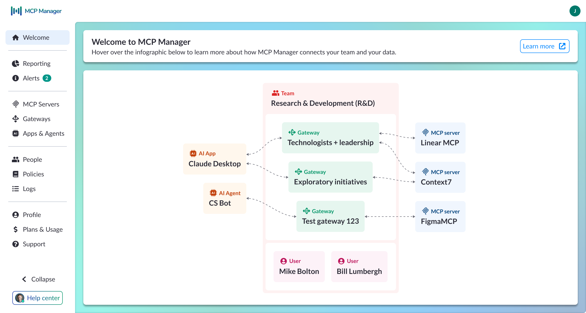
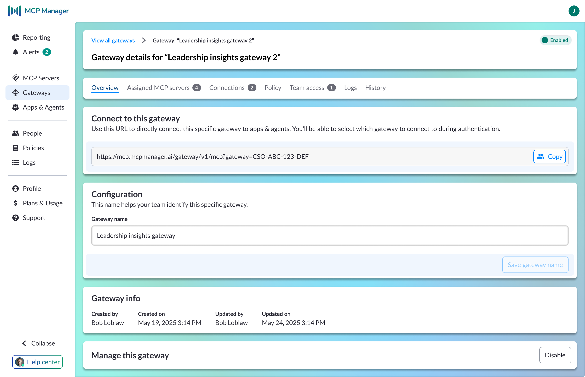
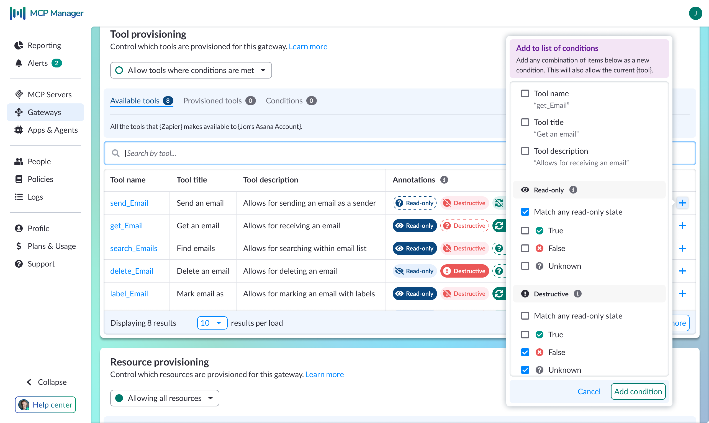

Staff Designer · Visor / Usercentrics · 2025–Present
Role
Staff Designer, sole designer
Problem
Organizations had no clear way to govern AI agent access at scale
Approach
First-principles product design, internal validation, alpha customer feedback, rapid iteration
Outcome
Led design from early concept to acquisition by Usercentrics in January 2026; product is now in active use and continuing to evolve within a larger platform
Overview
As MCP emerged in early 2025, Visor saw a bigger opportunity: governance. The challenge was no longer how to use MCP, but how to manage it once multiple teams, servers, and agents were involved. Organizations needed a way to control access, track approvals, and understand what was happening across the system without slowing developers down.
I designed MCP Manager from scratch to meet that need. As the sole designer, I was responsible for defining the product from the ground up: shaping the core mental model, designing the system for both administrators and developers, and helping turn an ambiguous new category into something usable, legible, and trustworthy.
The Challenge
The hardest part was not technical complexity — it was making an invisible system understandable.
MCP infrastructure is abstract. Servers, gateways, agents, permissions, and policies all interact in ways that are difficult to see from the surface. Before users could configure anything confidently, they needed a clear mental model of how the system worked.
That shaped the product from the start. The first job was to make the structure legible.
What I Designed
I defined the core product model around the main entities in the system:
This structure gave administrators a way to reason about the system without forcing developers into unnecessary complexity.

Welcome screen — system model overview
The navigation reflected the tension between speed and control. I organized the product into four layers:
This made the product easier to navigate without splitting it into separate admin and developer experiences.
One of the most important product decisions was how to represent gateways.
A gateway is valuable because it makes complexity disappear for developers. An app connects once and can then access multiple MCP servers through a single layer of orchestration. The developer does not need to configure every connection individually or even know which systems were involved.
That meant the UI had to communicate two truths at once: administrators need to understand and control this layer, and developers should barely have to think about it.

Gateway configuration — connection URL, assigned servers, team access, and logs
Local MCP servers require tunnels, which can easily become messy in the UI.
To simplify this, I introduced a grouping construct that ties a tunnel to a user's machine rather than a specific server. Only one MCP server is active through that connection at a time. This reduced a potentially unmanageable set of states into something users could actually understand and configure.
Design System and Product Evolution
MCP Manager was built on top of the existing Visor component library. That let us move quickly without rebuilding the system from scratch.
I extended the existing token and component architecture to support new MCP-specific patterns as the product matured.
A good example is the annotation chip system.
Tool annotations needed to communicate three distinct states: known true, known false, and unknown. This was not just a visual distinction. Each state changed how an administrator would interpret a tool's behavior and risk.
That same work later supported a more advanced condition builder. What began as simple attribute matching evolved into annotation-aware governance, where admins could create rules like "allow tools where Destructive is false" instead of relying only on name-based matching. This shifted the product from basic filtering toward semantic governance.

Annotation-aware condition builder — semantic governance by annotation state
As the configuration model became deeper, I introduced a breadcrumb and page-header pattern to support gateway-scoped views and deeper admin workflows. That pattern became the standard navigation model for more complex configuration paths.
How the Product Evolved
The product changed quickly as the category became clearer.
A representative example is the condition builder. In Phase 1, conditions were mostly attribute-based and acted as a simple provisioning gate. By Phase 3, the same workflow supported annotation-aware matching, letting administrators govern tool access based on semantic risk signals instead of labels alone.
That evolution shows how the product matured from a basic management layer into a more expressive governance system.
Outcome
MCP Manager was acquired by Usercentrics in January 2026. I continued with the product as Staff Designer, expanding my role to include design operations and team integration alongside core product work.
The work is still ongoing. The MCP ecosystem is young, conventions are still forming, and the product continues to evolve as customer needs become clearer.
Current work includes: